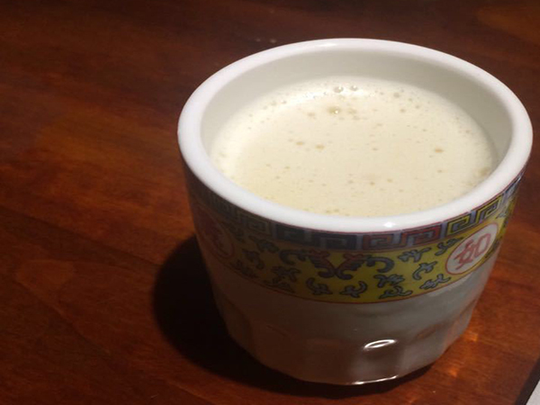

Buttered Tea aka Cha Bhoeja
Buttered Tea, as its name suggests, is made by mixing butter (usually salted), milk, and usually black tea.
The tea is savoury, salty and can be a strange experience for regular tea drinkers but is sure to warm up any who
drink it during a cold winter's morning.
Ingredients
- 4 Cups of Water
- 2 Tablespoons of Black Tea
- 1/4 Tablespoons of Salt
- 1/2 Cup of Milk
- A Blender
Instructions
- Bring the cups of water to a boil, and then turn down the heat.
- Put the 2 spoons of tea in the water and continue to boil for a couple of minutes, then strain.
- Combine the tea, salt, butter and milk or half and half in the blender and blend for 2-3 minutes – the longer the better.